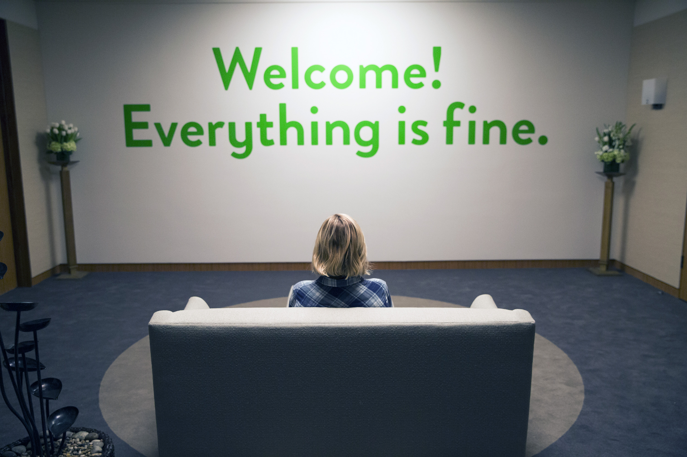

About
The Good Place is a town where those who have been good throughout their lives go once they have passed away. Michael (Danson) is the architect who oversees the town--and this is the first one he has been in charge of creating. Eleanor (Bell) arrives at the Good Place and realizes they have her name right, but everything else is wrong. She isn't meant to be there at all. With the help of Chidi, her soul mate (Harper), Eleanor tries to right her wrongs, seeking to finally earn her spot in the Good Place.
The Good Place is an American fantasy comedy television series created by Michael Schur. It premiered on NBC on September 19, 2016, and concluded on January 30, 2020, after four seasons and 53 episodes.
Reviews

On Rotten Tomatoes, the first season has a rating of 92%, based on 71 reviews, with an average rating of 7.74/10. The site's critical consensus reads, "Kristen Bell and Ted Danson knock it out of the park with supremely entertaining, charming performances in this absurd, clever and whimsical portrayal of the afterlife." On Metacritic, the first season has a score of 78 out of 100, based on reviews from 32 critics, indicating "generally favorable reviews".
The editors of TV Guide placed The Good Place second among the top ten picks for the most anticipated new shows of the 2016 season. In its review from writer Liam Matthews, "NBC's new comedy has an impressive pedigree" (referring to Mike Schur and stars, Kristen Bell and Ted Danson, the latter cited as "arguably the greatest sitcom actor of all time").
Several critics have noted that The Good Place is notable for its eschewing of antiheroes and cynical themes in favor of likable characters and positive messages. James Poniewozik of The New York Times said, "The most refreshing thing about The Good Place, in an era of artistic bleakness, is its optimism about human nature. It's made humane and sidesplittingly entertaining television out of the notion that people, and even the occasional immortal demon, are redeemable."
Philosophy Inspirations

The Good Place makes use of many different theories of moral philosophy and ethics through the character of Chidi Anagonye, the moral philosophy professor. Within the show, there is reference to John Locke, Tim Scanlon, Peter Singer, and Derek Parfit, and "the show has covered everything from Jonathan Dancy's theory of moral particularism, to Aristotelian virtue ethics, to Kantian deontology, to moral nihilism." UCLA philosophy professor Pamela Hieronymi and Clemson philosophy professor Todd May served as consultants to the show. They both made cameo appearances in the final episode.
The beginning of The Good Place takes its inspiration from the idiom "Hell is other people" from Jean-Paul Sartre's play No Exit. The concept "Hell is other people" is an often-misunderstood philosophical idiom meant to reflect that "Hell is other people because you are, in some sense, forever trapped within them, subject to their apprehension of you."